Automatic Transmission Oil Cooler Flushing and Flow Test (J 45096)
Automatic Transmission Oil Cooler Flushing and Flow Test (J 45096)
GM studies indicate that plugged or restricted transmission oil coolers and pipes cause insufficient transmission lubrication and elevated operating temperatures which can lead to premature transmission failure. Many repeat repair cases could have been prevented by following published procedures for transmission oil cooler flushing and flow checking. This procedure includes flow checking and flushing the auxiliary transmission oil cooler, if equipped.
Important: Use the J 45096 or equivalent to flush and flow test the transmission oil cooler and the oil cooler pipes after the transaxle is removed for repairs.
Only GM Goodwrench DEXRON(R)VI automatic transmission fluid should be used when doing a repair on a GM transmission.
Time allowance for performing the cooler flow checking and flushing procedure has been included in the appropriate labor time guide operations since the 1987 model year. The service procedure steps for oil cooler flushing and flow testing are as follows:
Cooler Flow Check and Flushing Steps
1. Machine Set-up
2. Determine Minimum Flow Rate
3. Back Flush
4. Forward Flush
5. Flow Test
6. Code Recording Procedure
7. Clean-up
Tools Required
^ J 45096 Transmission Oil Cooling System Flush and Flow Test Tool
^ J 45096-30 Transmission Cooler Flush Adapter
^ Shop air supply with water/oil filters, regulator and pressure gage - minimum 90 psi
^ Eye protection
^ Rubber gloves
Machine Set-up
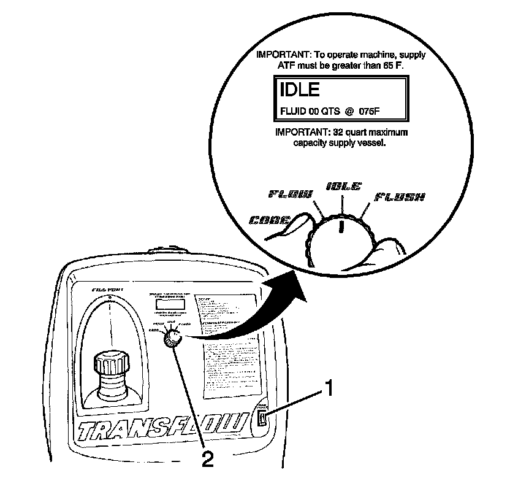
1. Verify that the main power switch (1) is in the OFF position.
2. Place the main function switch (2) in the IDLE position.
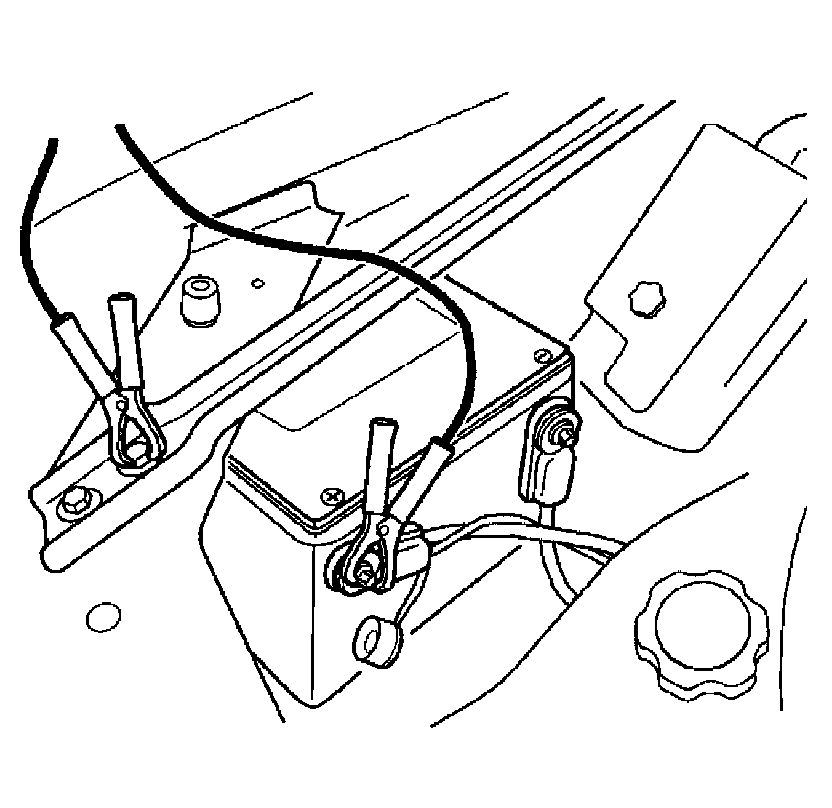
3. Connect J 45096 to the vehicle 12V DC power source by connecting the red battery clip to the positive, +, battery post on the vehicle and connect the negative lead to a known good chassis ground.
4. Turn the main power switch to the ON position.
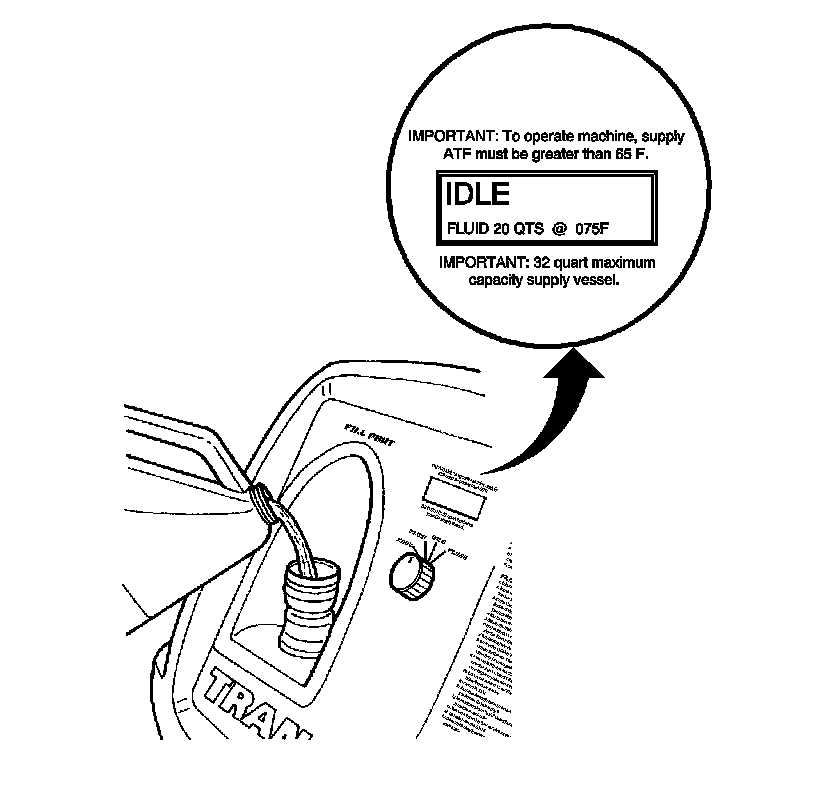
Notice: Do not overfill the supply vessel. Damage to the unit may result. To verify the fluid level, view the LCD screen display while filling the unit, to ensure the fluid level does not exceed 30 L (32 qt).
5. Fill the supply tank with Dexron(R)VI through the fill port.
6. Reinstall and tighten the fill cap.
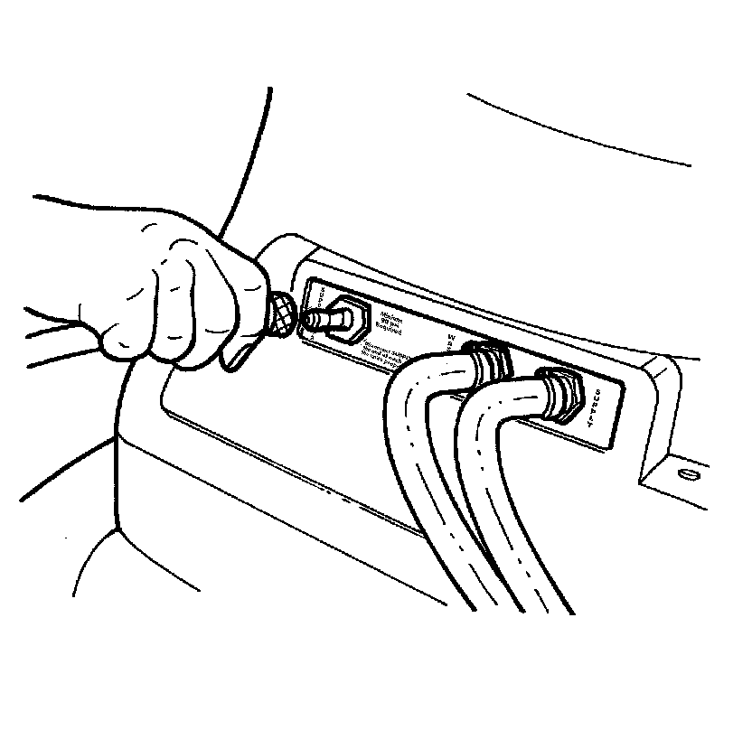
7. Connect a shop air supply hose to the quick-disconnect on the rear panel marked SUPPLY AIR.
Determine Minimum Flow Rate
Determine Minimum Flow Rate:
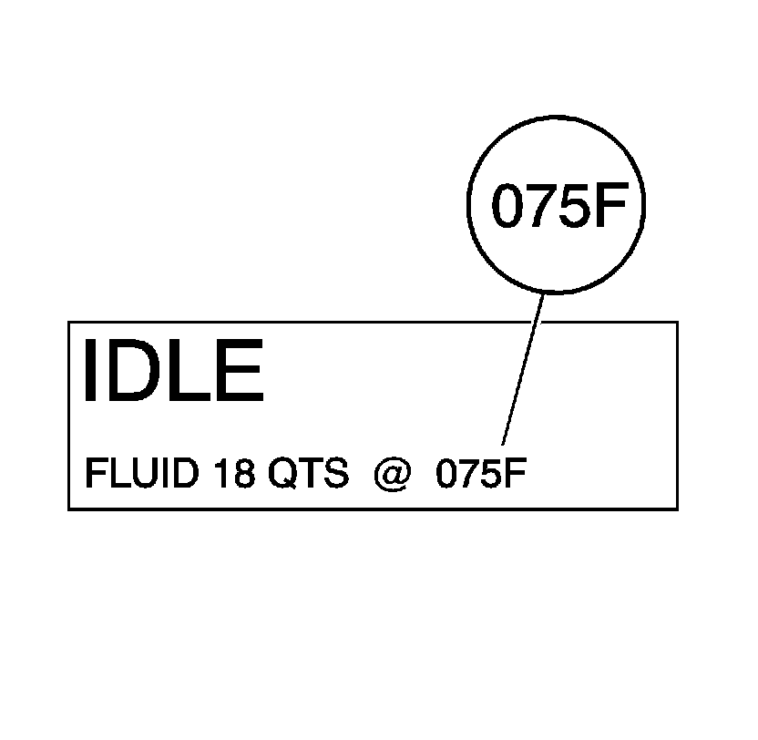
1. From the machine display, identify the temperature of the automatic transmission fluid that is stored in the supply vessel of J 45096.
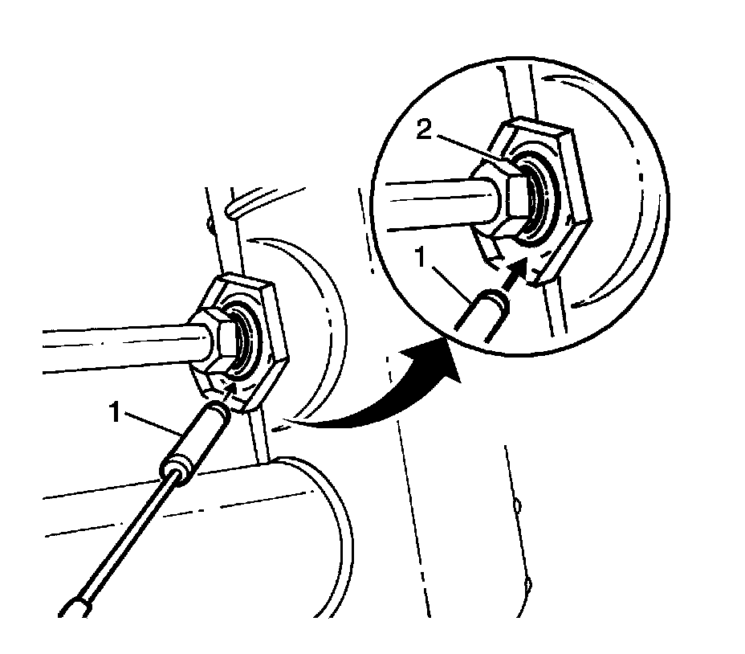
2. Determine whether the transmission oil cooler is steel or aluminum by using a magnet (1) at the cooler flange (2) at the radiator.
3. Refer to the table below. Using the temperature from step 1, locate on either the Steel MINIMUM Flow Rate table or the Aluminum MINIMUM Flow Rate table the minimum flow rate in gallons per minutes (GPM). Record the minimum flow rate in GPMs and the supply fluid temperature for further reference.
^ Fluid temperature: 75° F
^ Cooler type: Steel
The MINIMUM flow rate for this example would be 0.8 GPM.
4. Inspect transmission oil cooler lines for damage or kinks that could cause restricted oil flow. Repair as needed and refer to the appropriate GM service manual procedures.
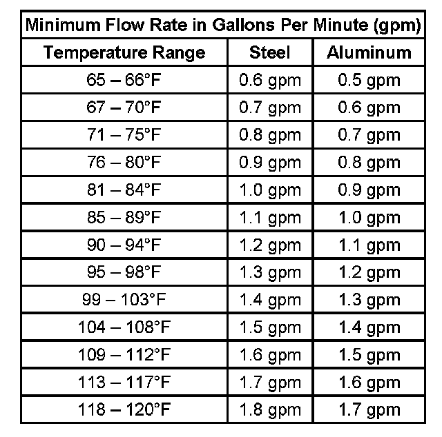
Back Flush Procedure
Backflush Procedure:
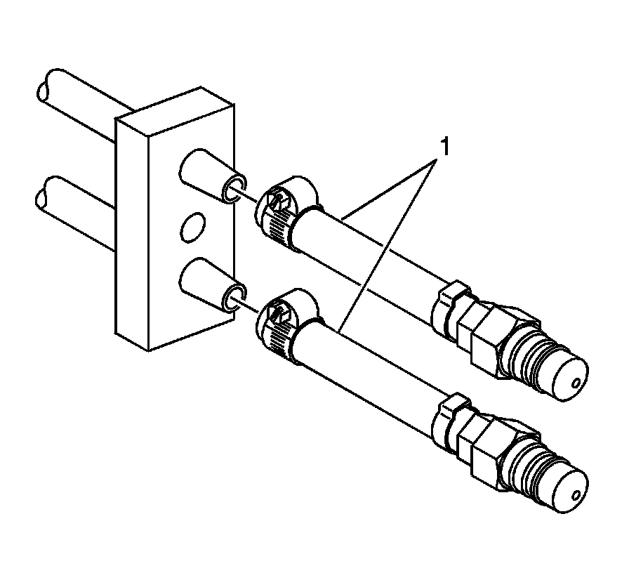
1. Connect the J 45096-30 (1) to the vehicle transmission oil cooler supply and return lines at the transmission.
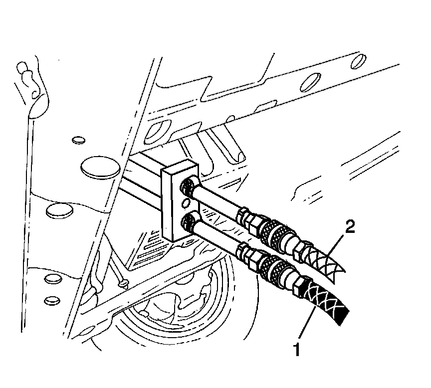
2. Connect the black supply hose (1) to the return line, top connector of the transmission, and the clear waste hose (2) to the feed line, bottom connector of the transmission, to the vehicle cooler lines. This is the reverse flow - backflush direction.
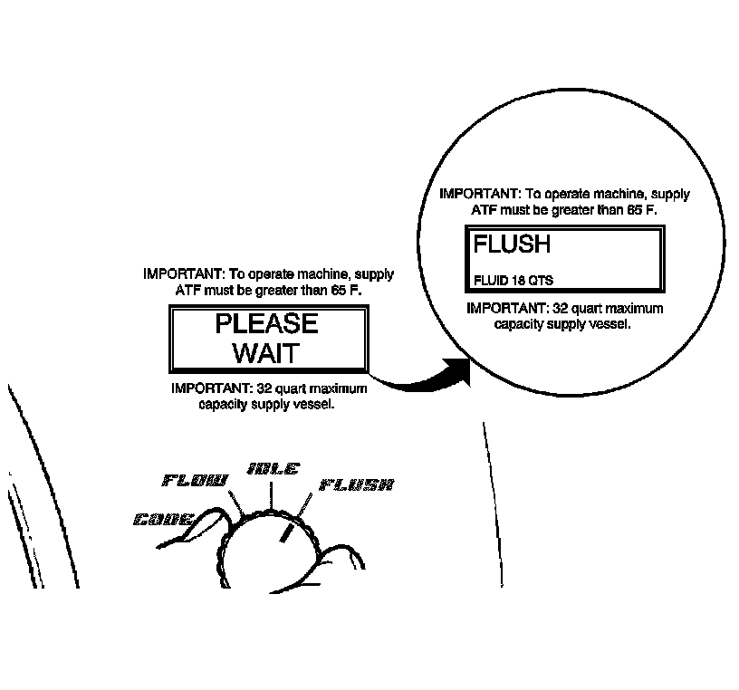
3. Turn the main function switch to the FLUSH position. Allow the machine to operate for 30 seconds.
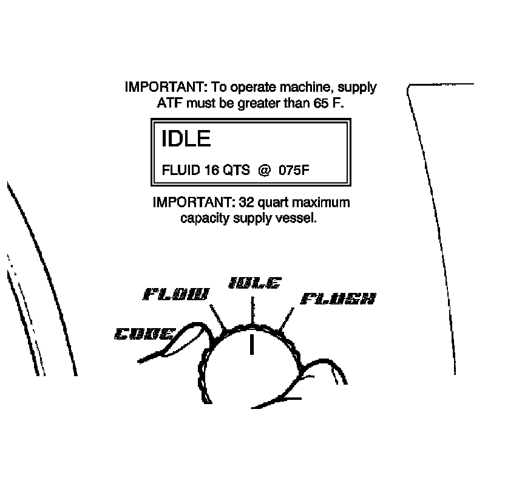
4. Turn the main function switch to the IDLE position and allow the supply vessel pressure to dissipate.
Forward Flush
Forward Flush:
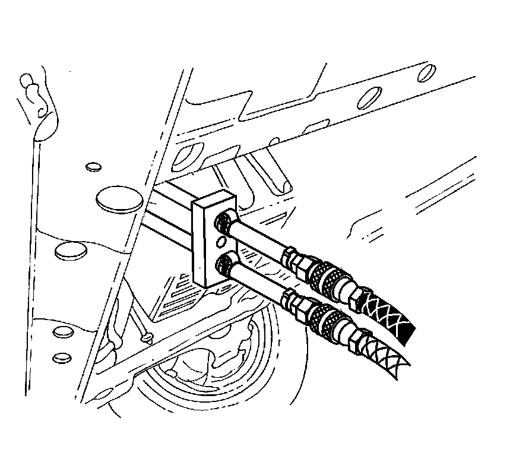
1. Disconnect the supply and waste hoses from the vehicle cooler lines. Reverse the supply and waste hoses to provide a normal flow direction.
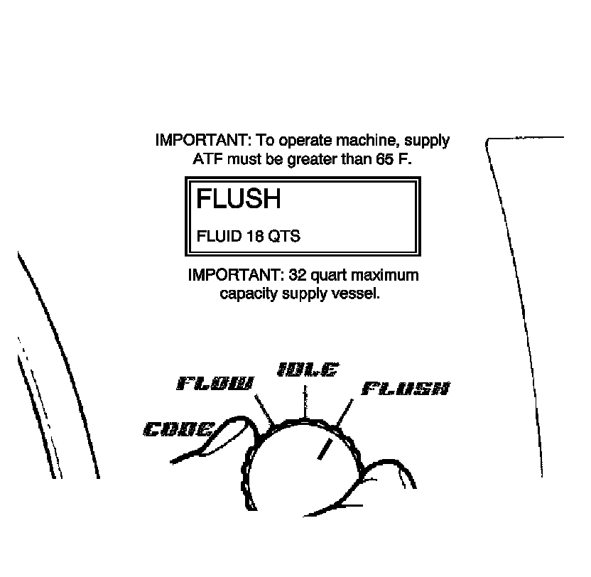
2. Turn the main function switch to the FLUSH position and allow machine to operate for 30 seconds.
Flow Test
Flow Test:
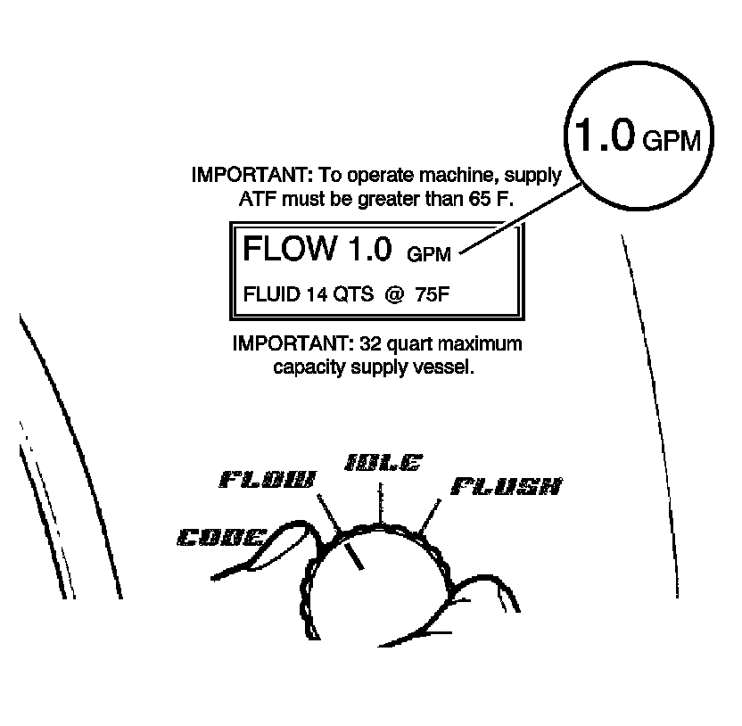
Important: If the flow rate is less than 0.5 gpm, the LCD displays an error message. Refer to the Troubleshooting section of the operation manual.
1. Turn the main function switch to the FLOW position and allow the oil to flow for 15 seconds. Observe and note the flow rate; this is the TESTED flow rate.
2. Compare the TESTED flow rate to the MINIMUM flow rate information previously recorded.
^ If the TESTED flow rate is equal to or greater than the MINIMUM flow rate recorded, the oil cooling system is functioning properly. Perform Code Recording Procedure.
^ If the TESTED flow rate is less than the MINIMUM flow rate previously recorded, repeat the back flush and forward flush procedures.
3. If the TESTED flow rate is less than the MINIMUM flow rate after the second test, perform Code Recording Procedure.
1. Replace the transmission oil cooler.
2. Reconnect supply and waste hoses to the cooler lines in the normal flow direction. Perform Flow Test.
3. Perform Code Recording Procedure.
Code Recording Procedure
Code Recording Procedure:
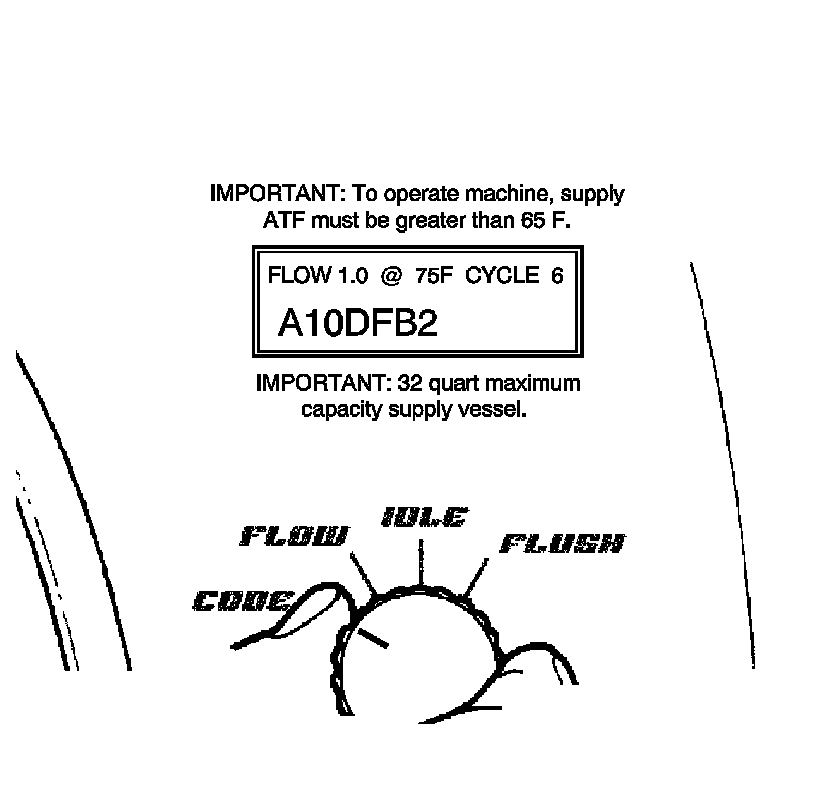
1. Turn the main function switch to the CODE position.
Important:
^ If power is interrupted prior to the recording of the seven-character code, the code will be lost and the flow rate test will need to be repeated.
^ The flow test must run for a minimum of 8-10 seconds and be above 0.5 GPM for a code to be generated.
Record TESTED flow rate, temperature, cycle and seven-character flow code information on repair order.
Clean-up
1. Turn the main function switch (2) to the IDLE position and allow the supply vessel pressure to dissipate.
2. Turn the main power switch (1) to the OFF position.
Important: A small amount of water may drain from the bottom of the unit when the air supply is disconnected. This is a normal operation of the built-in water separator.
3. Disconnect the supply and waste hoses and the 12-volt power source from the vehicle.
4. Disconnect the air supply hose from J 45096.
5. Dispose of the waste ATF in accordance with all applicable federal, state, and local requirements.